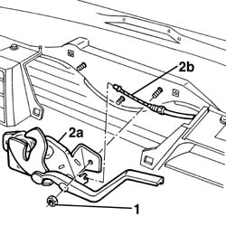
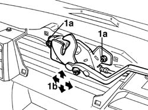

7025A34 bonnet lid lock (one) - r+r or repair
- Path
- Procedures > 70 FITTINGS > 7025 COMPARTMENT LIDS > 7025A bonnet lid > 7025A34 bonnet lid lock (one) - r+r or repair
- Kind
- repair procedure (removal / refitting; the operation number is the code)
- Applies to
- all engines; all production periods
- Interactive page
- https://sloeber94.github.io/elrnDB-a156/en/#/3238728
Applies to: all engines; all production periods
 Removing
Removing
 Refitting
Refitting7055A43 central front grille - r r
1. Unscrew the nuts.
2. Move slightly the lock (2a) and disconnect the driving cable (2b).

Applies to: all engines; all production periods
Refitting
RemovingCheck up the lock so as to verify it is not damaged.
Connect the driving cable with the lock.
Reassemble the lock.
1. Screw the nuts (1a) without tightening them and carry out the lock position adjustment. Arrows (1b) show the possible movements.

Applies to: all engines; all production periods
Tighten the nuts.
Test the lock and the control system efficiency.
Topics linked from this page (1)
Topics that link to this page (11)
- 1020D36 flywheel end oil seal - replace for manual gearbox with hydraulic selection versions
- 1024B11 engine flywheel - r r for manual gearbox with hydraulic selection versions
- 1088B24 engine cooling radiator - r r for air conditioned versions
- 1088E11 fans with single engine duct - r+r
- 1810A28 clutch - r r for manual gearbox with hydraulic selection versions
- 2110A11 manual gearbox with differential - r r for versions with hydraulic selection
- 5505A26 bonnet wiring - r r
- 5580E28 bonnet lid open alert switch - r+r following electrical wiring check
- 7025A10 bonnet lid - square
- 7025A26 bonnet lid opening control - repair
- 7025A27 bonnet lid opening linkage - r r for right-hand drive versions